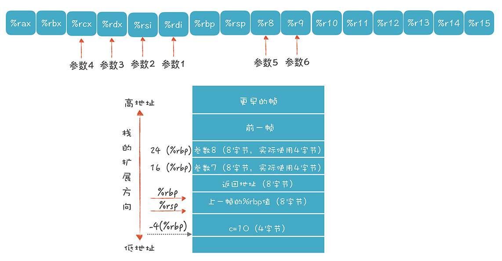
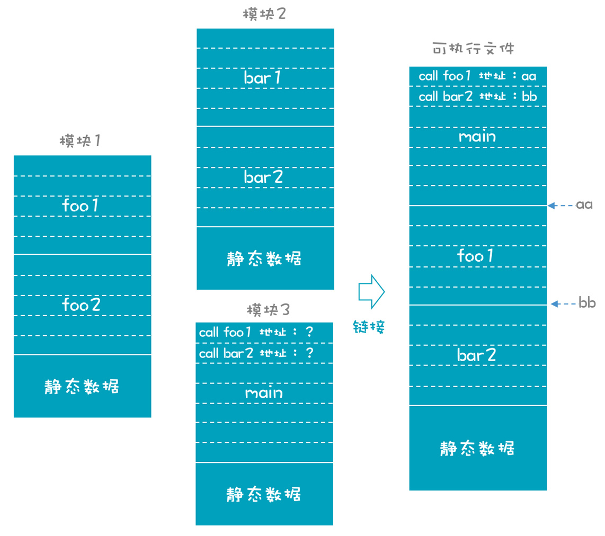

- 00 开篇词 为什么你要学习编译原理？.md
- 01 理解代码：编译器的前端技术.md
- 02 正则文法和有限自动机：纯手工打造词法分析器.md
- 03 语法分析（一）：纯手工打造公式计算器.md
- 04 语法分析（二）：解决二元表达式中的难点.md
- 05 语法分析（三）：实现一门简单的脚本语言.md
- 06 编译器前端工具（一）：用Antlr生成词法、语法分析器.md
- 07 编译器前端工具（二）：用Antlr重构脚本语言.md
- 08 作用域和生存期：实现块作用域和函数.md
- 09 面向对象：实现数据和方法的封装.md
- 10 闭包： 理解了原理，它就不反直觉了.md
- 11 语义分析（上）：如何建立一个完善的类型系统？.md
- 12 语义分析（下）：如何做上下文相关情况的处理？.md
- 13 继承和多态：面向对象运行期的动态特性.md
- 14 前端技术应用（一）：如何透明地支持数据库分库分表？.md
- 15 前端技术应用（二）：如何设计一个报表工具？.md
- 16 NFA和DFA：如何自己实现一个正则表达式工具？.md
- 17 First和Follow集合：用LL算法推演一个实例.md
- 18 移进和规约：用LR算法推演一个实例.md
- 19 案例总结与热点问题答疑：对于左递归的语法，为什么我的推导不是左递归的？.md
- 20 高效运行：编译器的后端技术.md
- 21 运行时机制：突破现象看本质，透过语法看运行时.md
- 22 生成汇编代码（一）：汇编语言其实不难学.md
- 23 生成汇编代码（二）：把脚本编译成可执行文件.md
- 24 中间代码：兼容不同的语言和硬件.md
- 25 后端技术的重用：LLVM不仅仅让你高效.md
- 26 生成IR：实现静态编译的语言.md
- 27 代码优化：为什么你的代码比他的更高效？.md
- 28 数据流分析：你写的程序，它更懂.md
- 29 目标代码的生成和优化（一）：如何适应各种硬件架构？.md
- 30 目标代码的生成和优化（二）：如何适应各种硬件架构？.md
- 31 内存计算：对海量数据做计算，到底可以有多快？.md
- 32 字节码生成：为什么Spring技术很强大？.md
- 33 垃圾收集：能否不停下整个世界？.md
- 34 运行时优化：即时编译的原理和作用.md
- 35 案例总结与热点问题答疑：后端部分真的比前端部分难吗？.md
- 36 当前技术的发展趋势以及其对编译技术的影响.md
- 37 云编程：云计算会如何改变编程模式？.md
- 38 元编程：一边写程序，一边写语言.md
- 加餐 汇编代码编程与栈帧管理.md
- 用户故事 因为热爱，所以坚持.md
- 第二季回归 这次，我们一起实战解析真实世界的编译器.md
- 结束语 用程序语言，推动这个世界的演化.md
23 生成汇编代码（二）：把脚本编译成可执行文件
学完两节课之后，对于后端编译过程，你可能还会产生一些疑问，比如：
1.大致知道汇编程序怎么写，却不知道如何从AST生成汇编代码，中间有什么挑战。
2.编译成汇编代码之后需要做什么，才能生成可执行文件。
本节课，我会带你真正动手，基于AST把playscript翻译成正确的汇编代码，并将汇编代码编译成可执行程序。
通过这样一个过程，可以实现从编译器前端到后端的完整贯通，帮你对编译器后端工作建立比较清晰的认识。这样一来，你在日常工作中进行大型项目的编译管理的时候，或者需要重用别人的类库的时候，思路会更加清晰。
从playscript生成汇编代码
先来看看如何从playscript生成汇编代码。
我会带你把playscript的几个有代表性的功能，而不是全部的功能翻译成汇编代码，一来工作量少一些，二来方便做代码优化。这几个有代表性的功能如下：
1.支持函数调用和传参（这个功能可以回顾加餐）。
2.支持整数的加法运算（在这个过程中要充分利用寄存器提高性能）。
3.支持变量声明和初始化。
具体来说，要能够把下面的示例程序正确生成汇编代码：
//asm.play
int fun1(int x1, int x2, int x3, int x4, int x5, int x6, int x7, int x8){
int c = 10;
return x1 + x2 + x3 + x4 + x5 + x6 + x7 + x8 + c;
}
println("fun1:" + fun1(1,2,3,4,5,6,7,8));
在加餐中，我提供了一段手写的汇编代码，功能等价于这段playscript代码，并讲述了如何在多于6个参数的情况下传参，观察栈帧的变化过程，你可以看看下面的图片和代码，回忆一下：

# function-call2-craft.s 函数调用和参数传递
# 文本段,纯代码
.section __TEXT,__text,regular,pure_instructions
_fun1:
# 函数调用的序曲,设置栈指针
pushq %rbp # 把调用者的栈帧底部地址保存起来
movq %rsp, %rbp # 把调用者的栈帧顶部地址,设置为本栈帧的底部
movl $10, -4(%rbp) # 变量c赋值为10,也可以写成 movl $10, (%rsp)
# 做加法
movl %edi, %eax # 第一个参数放进%eax
addl %esi, %eax # 加参数2
addl %edx, %eax # 加参数3
addl %ecx, %eax # 加参数4
addl %r8d, %eax # 加参数5
addl %r9d, %eax # 加参数6
addl 16(%rbp), %eax # 加参数7
addl 24(%rbp), %eax # 加参数8
addl -4(%rbp), %eax # 加上c的值
# 函数调用的尾声,恢复栈指针为原来的值
popq %rbp # 恢复调用者栈帧的底部数值
retq # 返回
.globl _main # .global伪指令让_main函数外部可见
_main: ## @main
# 函数调用的序曲,设置栈指针
pushq %rbp # 把调用者的栈帧底部地址保存起来
movq %rsp, %rbp # 把调用者的栈帧顶部地址,设置为本栈帧的底部
subq $16, %rsp # 这里是为了让栈帧16字节对齐，实际使用可以更少
# 设置参数
movl $1, %edi # 参数1
movl $2, %esi # 参数2
movl $3, %edx # 参数3
movl $4, %ecx # 参数4
movl $5, %r8d # 参数5
movl $6, %r9d # 参数6
movl $7, (%rsp) # 参数7
movl $8, 8(%rsp) # 参数8
callq _fun1 # 调用函数
# 为pritf设置参数
leaq L_.str(%rip), %rdi # 第一个参数是字符串的地址
movl %eax, %esi # 第二个参数是前一个参数的返回值
callq _printf # 调用函数
# 设置返回值。这句也常用 xorl %esi, %esi 这样的指令,都是置为零
movl $0, %eax
addq $16, %rsp # 缩小栈
# 函数调用的尾声,恢复栈指针为原来的值
popq %rbp # 恢复调用者栈帧的底部数值
retq # 返回
# 文本段,保存字符串字面量
.section __TEXT,__cstring,cstring_literals
L_.str: ## @.str
.asciz "fun1 :%d \n"
接下来，我们动手写程序，从AST翻译成汇编代码（相关代码在playscript-java项目的AsmGen.java类里）。
我们实现加法运算的翻译过程如下：
case PlayScriptParser.ADD:
//为加法运算申请一个临时的存储位置，可以是寄存器和栈
address = allocForExpression(ctx);
bodyAsm.append("\tmovl\t").append(left).append(", ").append(address).append("\n"); //把左边节点拷贝到存储空间
bodyAsm.append("\taddl\t").append(right).append(", ").append(address).append("\n"); //把右边节点加上去
break;
这段代码的含义是：我们通过allocForExpression()方法，为每次加法运算申请一个临时空间（可以是寄存器，也可以是栈里的一个地址），用来存放加法操作的结果。接着，用mov指令把加号左边的值拷贝到这个临时空间，再用add指令加上右边的值。
生成汇编代码的过程，基本上就是基于AST拼接字符串，其中bodyAsm变量是一个StringBuffer对象，我们可以用StringBuffer的toString()方法获得最后的汇编代码。
按照上面的逻辑，针对“x1 + x2 + x3 + x4 + x5 + x6 + x7 + x8 + c”这个表达式，形成的汇编代码如下：
# 过程体
movl $10, -4(%rbp)
movl %edi, %eax //x1
addl %esi, %eax //+x2
movl %eax, %ebx
addl %edx, %ebx //+x3
movl %ebx, %r10d
addl %ecx, %r10d //+x4
movl %r10d, %r11d
addl %r8d, %r11d //+x5
movl %r11d, %r12d
addl %r9d, %r12d //+x6
movl %r12d, %r13d
addl 16(%rbp), %r13d //+x7
movl %r13d, %r14d
addl 24(%rbp), %r14d //+x8
movl %r14d, %r15d
addl -4(%rbp), %r15d //+c，本地变量
看出这个代码有什么问题了吗？我们每次执行加法运算的时候，都要占用一个新的寄存器。比如，x1+x2使用了%eax，再加x3时使用了%ebx，按照这样的速度，寄存器很快就用完了，使用效率显然不高。所以必须要做代码优化。
如果只是简单机械地翻译代码，相当于产生了大量的临时变量，每个临时变量都占用了空间：
t1 := x1 + x2;
t2 := t1 + x3;
t3 := t2 + x4;
...
进行代码优化可以让不再使用的存储位置（t1，t2，t3…）能够复用，从而减少临时变量，也减少代码行数，优化后的申请临时存储空间的方法如下：
//复用前序表达式的存储位置
if (ctx.bop != null && ctx.expression().size() >= 2) {
ExpressionContext left = ctx.expression(0);
String leftAddress = tempVars.get(left);
if (leftAddress!= null){
tempVars.put(ctx, leftAddress); //当前节点也跟这个地址关联起来
return leftAddress;
}
}
这段代码的意思是：对于每次加法运算，都要申请一个寄存器，如果加号左边的节点已经在某个寄存器中，那就直接复用这个寄存器，就不要用新的了。
调整以后，生成的汇编代码就跟手写的一样了。而且，我们至始至终只用了%eax一个寄存器，代码数量也减少了一半，优化效果明显：
# 过程体
movl $10, -4(%rbp)
movl %edi, %eax
addl %esi, %eax
addl %edx, %eax
addl %ecx, %eax
addl %r8d, %eax
addl %r9d, %eax
addl 16(%rbp), %eax
addl 24(%rbp), %eax
addl -4(%rbp), %eax
# 返回值
# 返回值在之前的计算中,已经存入%eax
对代码如何使用寄存器进行充分优化，是编译器后端一项必须要做的工作。这里只用了很粗糙的方法，不具备实用价值，后面可以学习更好的优化算法。
弄清楚了加法运算的代码翻译逻辑，我们再看看AsmGen.java中的generate()方法和generateProcedure()方法，看看汇编代码完整的生成逻辑是怎样的。这样可以帮助你弄清楚整体脉络和所有的细节，比如函数的标签是怎么生成的，序曲和尾声是怎么加上去的，本地变量的地址是如何计算的，等等。
public String generate() {
StringBuffer sb = new StringBuffer();
// 1.代码段的头
sb.append("\t.section __TEXT,__text,regular,pure_instructions\n");
// 2.生成函数的代码
for (Type type : at.types) {
if (type instanceof Function) {
Function function = (Function) type;
FunctionDeclarationContext fdc = (FunctionDeclarationContext) function.ctx;
visitFunctionDeclaration(fdc); // 遍历，代码生成到bodyAsm中了
generateProcedure(function.name, sb);
}
}
// 3.对主程序生成_main函数
visitProg((ProgContext) at.ast);
generateProcedure("main", sb);
// 4.文本字面量
sb.append("\n# 字符串字面量\n");
sb.append("\t.section __TEXT,__cstring,cstring_literals\n");
for(int i = 0; i< stringLiterals.size(); i++){
sb.append("L.str." + i + ":\n");
sb.append("\t.asciz\t\"").append(stringLiterals.get(i)).append("\"\n");
}
// 5.重置全局的一些临时变量
stringLiterals.clear();
return sb.toString();
}
generate()方法是整个翻译程序的入口，它做了几项工作:
1.生成一个.section伪指令，表明这是一个放文本的代码段。
2.遍历AST中的所有函数，调用generateProcedure()方法为每个函数生成一段汇编代码，再接着生成一个主程序的入口。
3.在一个新的section中，声明一些全局的常量（字面量）。整个程序的结构跟最后生成的汇编代码的结构是一致的，所以很容易看懂。
generateProcedure()方法把函数转换成汇编代码，里面的注释也很清晰，开头的工作包括：
1.生成函数标签、序曲部分的代码、设置栈顶指针、保护寄存器原有的值等。
2.接着是函数体，比如本地变量初始化、做加法运算等。
3.最后是一系列收尾工作，包括恢复被保护的寄存器的值、恢复栈顶指针，以及尾声部分的代码。
我们之前已经理解了一个函数体中的汇编代码的结构，所以看这段翻译代码肯定不费事儿。
private void generateProcedure(String name, StringBuffer sb) {
// 1.函数标签
sb.append("\n## 过程:").append(name).append("\n");
sb.append("\t.globl _").append(name).append("\n");
sb.append("_").append(name).append(":\n");
// 2.序曲
sb.append("\n\t# 序曲\n");
sb.append("\tpushq\t%rbp\n");
sb.append("\tmovq\t%rsp, %rbp\n");
// 3.设置栈顶
// 16字节对齐
if ((rspOffset % 16) != 0) {
rspOffset = (rspOffset / 16 + 1) * 16;
}
sb.append("\n\t# 设置栈顶\n");
sb.append("\tsubq\t$").append(rspOffset).append(", %rsp\n");
// 4.保存用到的寄存器的值
saveRegisters();
// 5.函数体
sb.append("\n\t# 过程体\n");
sb.append(bodyAsm);
// 6.恢复受保护的寄存器的值
restoreRegisters();
// 7.恢复栈顶
sb.append("\n\t# 恢复栈顶\n");
sb.append("\taddq\t$").append(rspOffset).append(", %rsp\n");
// 8.如果是main函数，设置返回值为0
if (name.equals("main")) {
sb.append("\n\t# 返回值\n");
sb.append("\txorl\t%eax, %eax\n");
}
// 9.尾声
sb.append("\n\t# 尾声\n");
sb.append("\tpopq\t%rbp\n");
sb.append("\tretq\n");
// 10.重置临时变量
rspOffset = 0;
localVars.clear();
tempVars.clear();
bodyAsm = new StringBuffer();
}
最后，你可以通过-S参数运行playscript-java，将asm.play文件生成汇编代码文件asm.s，再生成和运行可执行文件：
java play.PlayScript -S asm.play -o asm.s //生成汇编代码
gcc asm.s -o asm //生成可执行文件
./asm //运行可执行文件
另外，我们的翻译程序只实现了少量的特性（加法运算、本地变量、函数……）。我建议基于这个代码框架做修改，增加其他特性，比如减法、乘法和除法，支持浮点数，支持if语句和循环语句等。学过加餐之后，你应该清楚如何生成这样的汇编代码了。
到目前为止，我们已经成功地编译playscript程序，并生成了可执行文件！为了加深你对生成可执行文件的理解，我们再做个挑战，用playscript生成目标文件，让C语言来调用。这样可以证明playscript生成汇编代码的逻辑是靠谱的，以至于可以用playscript代替C语言来写一个共用模块。
通过C语言调用playscript模块
我们在编程的时候，经常调用一些公共的库实现一些功能，这些库可能是别的语言写的，但我们仍然可以调用。我们也可以实现playscript与其他语言的功能共享，在示例程序中实现很简单，微调一下生成的汇编代码，使用“.global _fun1”伪指令让_fun1过程变成全局的，这样其他语言写的程序就可以调用这个_fun1过程，实现功能的重用。
# convention-fun1.s 测试调用约定，_fun1将在外部被调用
# 文本段,纯代码
.section __TEXT,__text,regular,pure_instructions
.globl _fun1 # .global伪指令让_fun1函数外部可见
_fun1:
# 函数调用的序曲,设置栈指针
pushq %rbp # 把调用者的栈帧底部地址保存起来
movq %rsp, %rbp # 把调用者的栈帧顶部地址,设置为本栈帧的底部
movl $10, -4(%rbp) # 变量c赋值为10,也可以写成 movl $10, (%rsp)
# 做加法
movl %edi, %eax # 第一个参数放进%eax
addl %esi, %eax # 加参数2
addl %edx, %eax # 加参数3
addl %ecx, %eax # 加参数4
addl %r8d, %eax # 加参数5
addl %r9d, %eax # 加参数6
addl 16(%rbp), %eax # 加参数7
addl 24(%rbp), %eax # 加参数8
addl -4(%rbp), %eax # 加上c的值
# 函数调用的尾声,恢复栈指针为原来的值
popq %rbp # 恢复调用者栈帧的底部数值
retq # 返回
接下来再写一个C语言的函数来调用fun1()，其中的extern关键字，说明有一个fun1()函数是在另一个模块里实现的：
/**
* convention-main.c 测试调用约定。调用一个外部函数fun1
*/
#include <stdio.h>
//声明一个外部函数，在链接时会在其他模块中找到
extern int fun1(int x1, int x2, int x3, int x4, int x5, int x6, int x7, int x8);
int main(int argc, char *argv[])
{
printf("fun1: %d \n", fun1(1,2,3,4,5,6,7,8));
return 0;
}
然后在命令行敲下面两个命令：
# 编译汇编程序
as convention-fun1.s -o convention-fun1.o
# 编译C程序
gcc convention-main.c convention-fun1.o -o convention
第一个命令，把playscript生成的汇编代码编译成一个二进制目标文件。
第二个命令在编译C程序的时候，同时也带上这个二进制文件，那么编译器就会找到fun1()函数的定义，并链接到一起。- 最后生成的可执行文件能够顺利运行。
这里面，我需要解释一下链接过程，它有助于你在二进制文件层面上加深对编译过程的理解。
其实，高级语言和汇编语言都容易阅读。而二进制文件，则是对计算机友好的，便于运行。汇编器可以把每一个汇编文件都编译生成一个二进制的目标文件，或者叫做一个模块。而链接器则把这些模块组装成一个整体。
但在C语言生成的那个模块中，调用fun1()函数时，它没有办法知道fun1()函数的准确地址，因为这个地址必须是整个文件都组装完毕以后才能计算出来。所以，汇编器把这个任务推迟，交给链接器去解决。

这就好比你去饭店排队吃饭，首先要拿个号（函数的标签），但不知道具体坐哪桌。等叫到你的号的时候（链接过程），服务员才会给你安排一个确定的桌子（函数的地址）。
既然我们已经从文本世界进入了二进制的世界，那么我们可以再加深一下对可执行文件结构的理解。
理解可执行文件
我们编译一个程序，最后的结果是生成可运行的二进制文件。其实，生成汇编代码以后，我们就可以认为编译器的任务完成了。后面的工作，其实是由汇编器和链接器完成的。但我们也可以把整个过程都看做编译过程，了解二进制文件的结构，也为我们完整地了解整个编译过程划上了句号。
当然了，对二进制文件格式的理解，也是做大型项目编译管理、二进制代码分析等工作的基础，很有意义。
对于每个操作系统，我们对于可执行程序的格式要求是不一样的。比如，在Linux下，目标文件、共享对象文件、二进制文件，都是采用ELF格式。
实际上，这些二进制文件的格式跟加载到内存中的程序的格式是很相似的。这样有什么好处呢？它可以迅速被操作系统读取，并加载到内存中去，加载速度越快，也就相当于程序的启动速度越快。
同内存中的布局一样，在ELF格式中，代码和数据也是分开的。这样做的好处是，程序的代码部分，可以在多个进程中共享，不需要在内存里放多份。放一份，然后映射到每个进程的代码区就行了。而数据部分，则是每个进程都不一样的，所以要为每个进程加载一份。
这样讲的话，你就理解了可执行文件、目标文件等二进制文件的原理了，具体的细节，可以查阅相关的文档和手册。
课程小结
这节课，我们实现了从AST到汇编代码，汇编代码到可执行文件的完整过程。现在，你应该对后端工作的实质建立起了直接的认识。我建议你抓住几个关键点：
首先，从AST生成汇编代码，可以通过比较机械的翻译来完成，我们举了加法运算的例子。阅读示例程序，你也可以看看函数调用、参数传递等等的实现过程。总体来说，这个过程并不难。
第二，这种机械地翻译生成的代码，一定是不够优化的。我们已经看到了加法运算不够优化的情况，所以一定要增加一个优化的过程。
第三，在生成汇编的过程中，最需要注意的就是要遵守调用约定。这就需要了解调用约定的很多细节。只要遵守调用约定，不同语言生成的二进制目标文件也可以链接在一起，形成最后的可执行文件。
现在我已经带你完成了编译器后端的第一轮认知迭代，并且直接操刀汇编代码，破除你对汇编的恐惧心。在之后的课程中，我们会进入第二轮迭代：中间代码和代码优化。
一课一思
我们针对加法计算、函数调用等语法生成了汇编代码。你能否思考一下，如果要支持其他运算和语法，比如乘法运算、条件判断、循环语句等，大概会怎样实现？如果要支持面向对象编程，又该怎样实现呢？欢迎你打开思路，在留言区分享自己的想法。
最后，感谢你的阅读，如果这篇文章让你有所收获，也欢迎你将它分享给更多的朋友。
示例代码我放在文末，供你参考。
© 2019 - 2023 Liangliang Lee. Powered by gin and hexo-theme-book.